Yep, this is it - the last NEPO 5k Don't Run. Photos by Megumi Shawna Arai and Makenzie Stone, unless stated otherwise.
To say it was a windy one is an understatement. Registration by Vis-a-Vis Society was among the many projects that almost blew away that day.
Luckily we had many helping hands...
...to try to keep things attached and on the ground...
... and things calmed down a bit later in the afternoon. Just in time for the non-runners to hit the route.
Always great, accompanying video by Vis-a-Vis.
Flower-Pie Shop by SYNKHRA Pie & Mystical Orchid part one...
...and part two.
Start to Finish - Claire dolling out tattoos designed by Claire Cowie and Leo Berk.
Participants got one at the start, the other awaited them at the finish line.
Untitled (awning) by Reilly Sinanan.
Participants watching Transformations - a collaboration by Kat Larson...
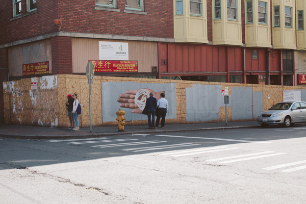
... and No Touching Ground.
Eirik Johnson's installation Refill under the I-5 overpass.
Words to travel by... racing bibs by Vis-a-Vis Society.
NEPO arithmetic: 463 + 778 + 118 = INVISIBLE SLOW BURST

Bin 1: Anastasia Hill and Maura Brewer were selling thumb drives containing undisclosed, crowd-sourced document files from the back of their car.
Bin 1 sold out pretty fast, we assume there will be Bin 2 sometimes somewhere in the future?
Philip Ladeau's installation
The space between us is minute yet infinite & deep. (Photo by Rafael Soldi).
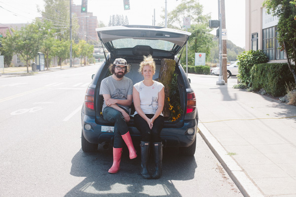
Also in the back of a vehicle was an audio/visual installation by Nat Evans and Erin Elyse Burns. Lots of love for that log #logvibe.
Among the casualties of the storm was a project by our veteran group "meadow starts with p". They fought an epic Epoch Battle!, but in the end lost to the atmospheric elements and went home. Here are the remnants of their brave endeavor.
This photo sums it all up.
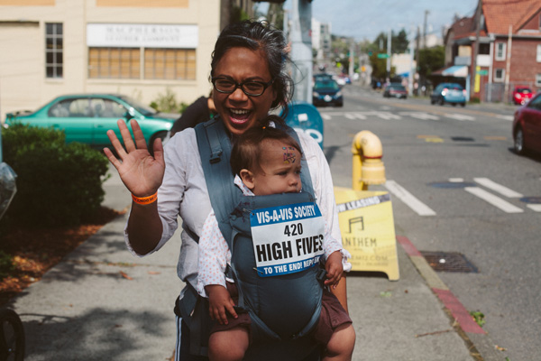
Hey, but some of us survived. High Fives!

Analog Photocopy by Shaun Kardinal. (Photo by Joseph Lambert)
Bridge Notes (abridged) by always funny and clever John Osebold.
Read the whole series here: Bridge Facts. (Photo by Joseph Lambert)
Untitled - sidewalk treatment by Trevor Johnson.
One of the Soft Plaques installations by Gretchen Frances Bennett along the way.
Economical use of a street light pole.
One in the series of Rearrangements by Maggie Carson Romano.
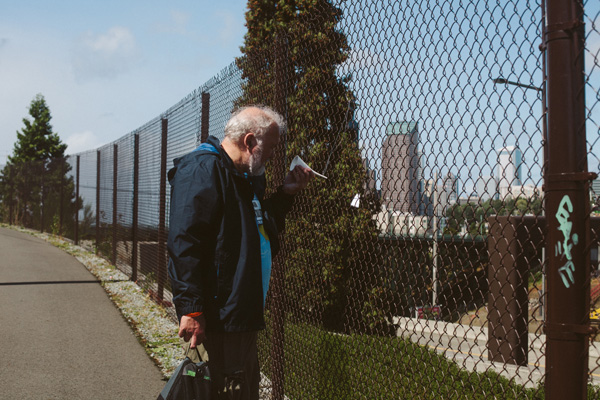
Also found all along the way were "111 Attention Cups" by Sylwia Tur. Awaiting their new 111 attentive lucky owners.
Aaron Murray pointing people towards his project The wonderful Wizard of Odd located on the Lewis Park nature trail.
Caption this: ________ (Photo by Joseph Lambert)
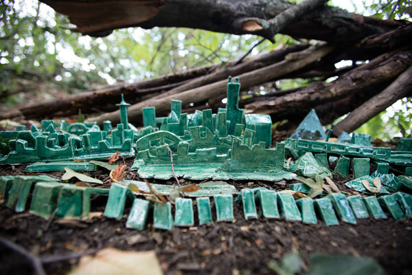
Emerald City by Aaron Murray. (Photo by Joseph Lambert)

Back on the bike trail: an encounter with Anatomy of an Accident: v.2 interactive impact by PEIMo.
Delicious: Banana Split by Coco Allred.
Located on the Equality sculpture in Daejeon Park was a performance by Coleman Pester and TECTONIC MARROW SOCIETY "we are all completely alone, together"

(Photo by Joseph Lambert)
This tall guy here, an air dancer, flapping in the woods was part of a multilevel, multi location, multimedia project called Inner Ear by Cameron Hostetter and Forrest Perrine.
A listening globe that collected sounds from several cellphones that were placed along the way and marked with miniature air-dancers.
A kinetic sculpture by Chris Burnside that moved much faster then expected (and anticipated by the artist). Watch the intended and real movement here.
161+ 714 = 875 = CLOSER RIDE HORSE AWAY
A Roof Over Our Heads by Colleen RJC Bratton.
Literally.
Another extra special performance by Kathryn Rathke and co. (Rathke/Wright/Cohen/Law): High Tea and Consciousness
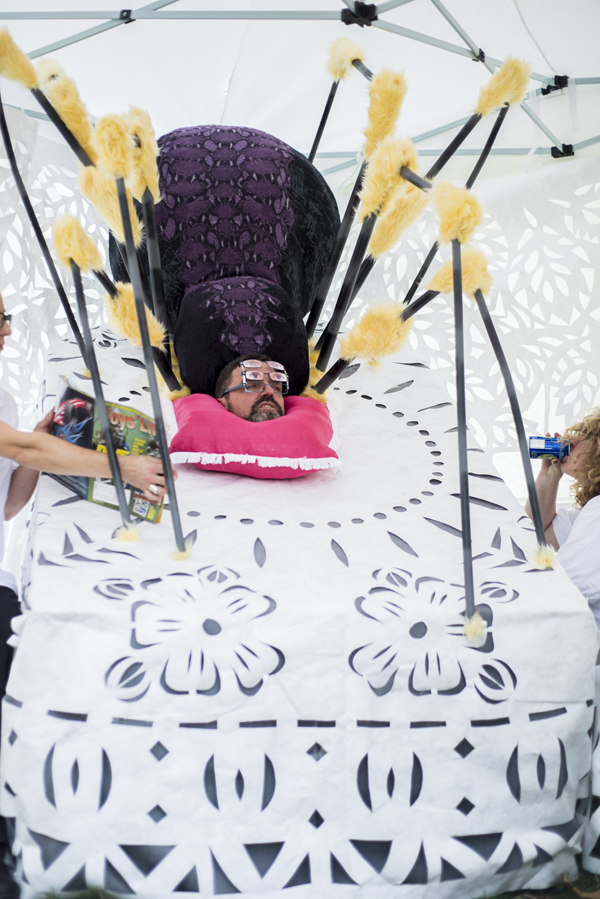
This is a level-113-consciousness being (aka Barry Wright) whom you got to ask existential questions if you graduated to like level-2-consciousness. But I don't know, I might be getting it wrong because I never got that far.
This is how a sculpture by Max Cleary and Katy Lester titledBe Forever, Always" looked before...
...and after.
Translational Scroll by Fritz Rodriguez. (Photo by Joseph Lambert)
Fritz pulled off an amazing technological feat. The audience (#126 Bye Bye in this case) hit the wooden pad with a drum stick (when done chewing on it)...
...the impulse was transmitted to a mechanism that triggered a stamp to stamp an unwinding paper scroll.
Here are some stamp patterns created.
And people in action, "playing" the scroll.
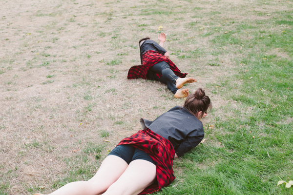
Agenda Neutral performed by Eric Eugene Aquilar and Christine Abdale.
Platform for a New Mountain by Aidan Fitzgerald.
Flower cairns by Joey Veltkamp and Ben Gannon. One for each year of NEPO 5k.
nomadic patterns - a roaming sound performance by John Teske and co.
Master and Servant by Greg Lundgren. Another casualty of the stormy weather which has proven to be the real master.
An olfactory sculpture by Matt Browning.
Second Sky by Jean Nagai was really hard to control and string up on that windy morning.
The end result was wonderful.
Another lovely creation by Maggie Carson Romano.

Works by Gretchen Bennett and Nathaniel Russell share the same telephone post.
FoundationDestructionConstruction by Ryan Law.
And he did just that.
Another great one in the series of performances by Sarah Galvin: Poetry Reading With Backup Dancers
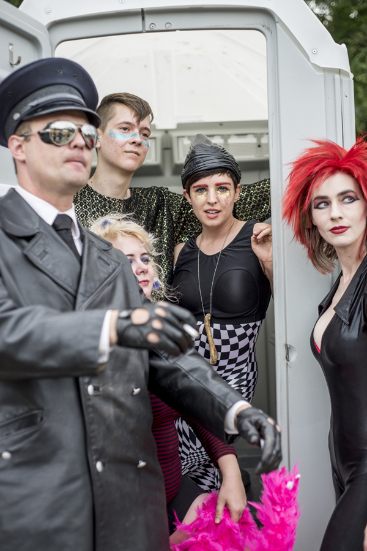
Dancers: Willie Fitzgerald, Riley Christiansen, Mary Anne Carter, Jack Bennet and Tiffany Astrid Bennet.
In the end of the performance Einstein took Sarah away in a pick up truck.
this is not a quilt by Calie Swedberg.
free couch
Max Kraushaar in CARSON CITY
Unbelievable, but he actually managed to dig himself out with that spoon.
Another great one from the series of Flyers by Nathaniel Russell.
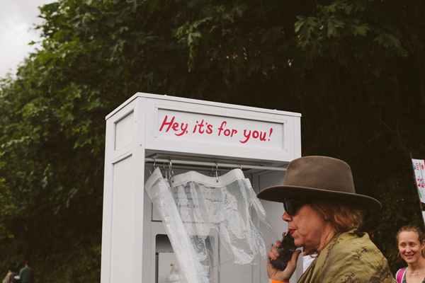
This phone booth was part f the Inner Ear project by Cameron Hostetter and Forrest Perrine.
Photo sculpture by Ken Turner.
Wall Scape by Isabel Blue.
Untitled - an installation by Francesca Lohmann.
Cutie Beauty's Garage Glam Yard Sale! by Keeara Rhodes and Brian Rentley.
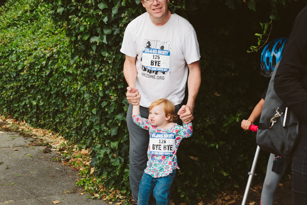
#125 BYE with #126 BYE BYE
Fuck 'em, it's pleasure. by Elias Hansen.
Jazz thing ... you know. (Photo by Joseph Lambert)
#930 UPWARD checking out Gourdlet by Glenn Herlihy.
Avalanche + Diffuser got their game down (and keeping it dry).
Inside this garage was a video installation Mouth Filled Ash by Margarita Sanchez Urdaneta. Her video piece is here.
Let's make something together by Carolina Silva and Rumi Koshino.(Photo by Zack Bent)
Ve-euws: (w)Holes - the fourth iteration from the series of intimate interactive performances Julia Freeman has created for NEPO 5k. (Photo by Junko Yamamoto)
(Photo by Junko Yamamoto)
Alice Gosti! She curated an amazing line up of performances at the finish line.
Performance by Kaitlin McCarthy with Jenny May Peterson, and Keith White as a audience member. (Photo by Joseph Lambert)
JuJu Kusanagi. (Photo by Joseph Lambert)
Performance by Amy Johnson. (Photo by Joseph Lambert)
Brittani Karhoff.
Hendri Walujo, Tara Tamaribuchi Gibbs and Diego Briceno in a work by Noelle Chun.
(Photo by Joseph Lambert)
Jan Trumbauer in a work by Peter Donnelly.(Photo by Joseph Lambert)
Peter Dee, Alyza DelBread Monley and Jan Trambauer perfomed Sparklefunk along the route as wells as the finish line. (Photo by Joseph Lambert)
(Photo by Joseph Lambert)
Eric Eugene Aguilar.
Alyza DelPan-Monley.
Markeith Wiley with Laura Aschoff and Amy Johnson. (Photo by Joseph Lambert)
(Photo by Joseph Lambert)
Performance by Jan Trumbauer with Petra Zanki and Hendri Walujo.

Britta Johnson' s video installation Outer Layer shining at night. Colors are a bit skewed here, so here is a link to the original video
Performance by Lisa Prank.
The amazing musical set by The Fabulous Downey Brothers.
Performance by Lake finished the evening and the last NEPO 5k.
BYE!
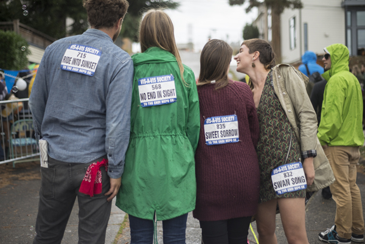
715 + 568 + 835 + 832 = RIDE INTO SUNSET NO END IN SIGHT SWEET SORROW SWAN SONG
-------------------------------------------------------------------------
Photos by Megumi Shauna Arai and Makenzie Stone.
-------------------------------------------------------------------------
Curated by Zack Bent, Klara Glosova, Serrah Russell and Sierra Stinson.
NEPO 5k Don't Run Reaches the Finish Line by Amanda Manitach for City Arts Magazine
All content © NEPO House 2015